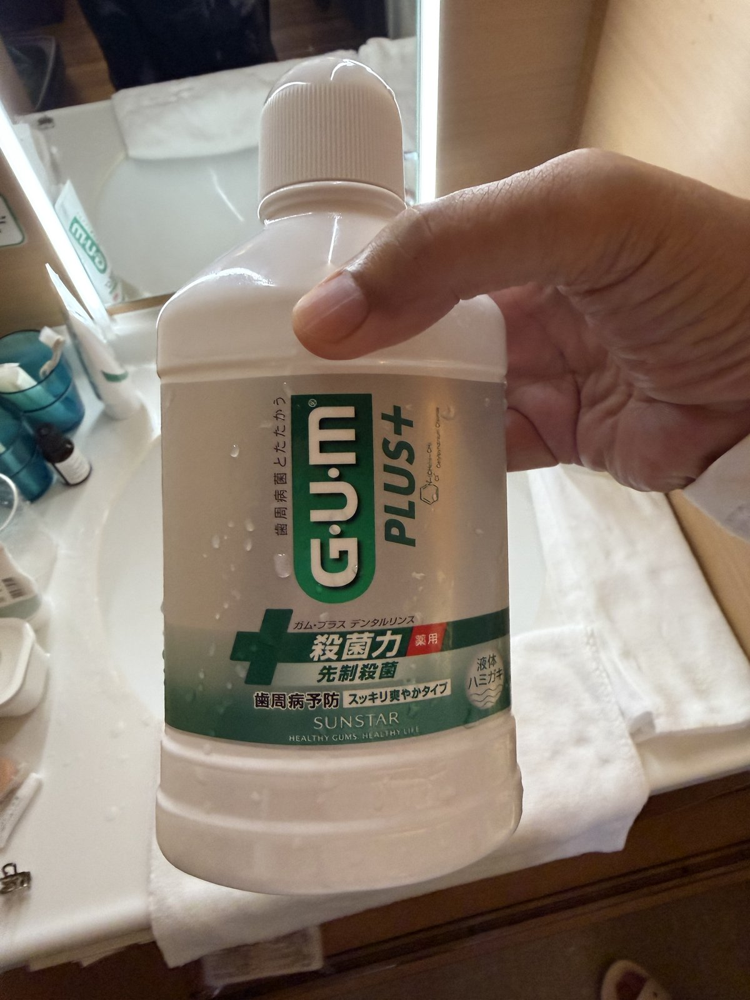
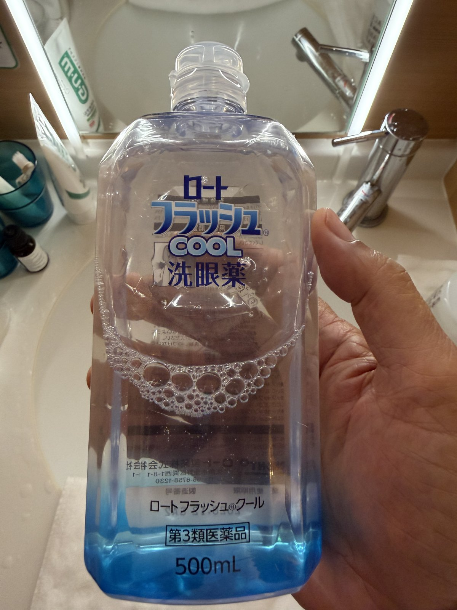

At 70, small daily habits matter more than big fixes. These two products, both bought at a Japanese pharmacy, have become part of my morning and evening routine.

A medicated (薬用) liquid mouth rinse from Sunstar's GUM line, made specifically for gum health rather than just fresh breath. It's designed to kill the bacteria that cause gum disease and gingivitis, with a refreshing, non-harsh mint finish.

An eye-wash solution used with a small eye cup to rinse out dust, pollen, and irritation — useful after long flights, air-conditioned rooms, or a dusty day out sightseeing. Classified in Japan as a 第3類医薬品 (Class 3 over-the-counter medicine), so it's a real medicated product, not just saline.
These are personal notes on products I use, not a recommendation to self-treat. Read the Japanese package insert (添付文書) carefully, and check with a doctor or pharmacist if you have existing eye or gum conditions, or are on other medication.